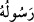

besmele satırı ile birbirlerinden sıkça ayrılmaları dolayısıyladır. Bunlar kısa sure
olduklarından dolayı yakın yakın birbirlerinden ayrılmışlar, bu sebeple de aralarındaki
tafsil çok olmuştur.
Bazıları da der ki: Mufassal yedinci yedidir. Fâsılalarının çok olması dolayısıyla bu
isim verilmiştir. Muhammed veya Fetih ya da Kâf suresinden Kur’ân-ı Kerîm’in sonuna
kadardır. Tuvel-i mufassal, Burûc suresine kadar, evsâtı Lem Yekün/Beyyine sûresine
kadar, kısârı/kısa sûreler ise Kur’ân-ı Kerîm’in sonuna kadardır.
Denilmiştir ki:
Uzunları (tuvâl) “lâ tukaddimû”dan “abese”ye kadar bil,
Ortasını (evsat) “abese”den “lemyekün”e kadar oku.
Kısaları (kısâr) “lem yekün” den sonuna kadar gelir,
Bu nazmı oku ki sana kolay olsun.
Cumhûrun görüşüne göre tuvel-i mufassal Hucurât suresinden Burûc suresine kadar,
evsâtı Burûc suresinden Beyyine suresine kadar, kısârı ise Beyyine suresinden sonuna
kadardır.
Rivâyet olunur ki; Kurra Kur’ân-ı Kerîm’i Haccâc zamanında otuz cüze taksim
ettikleri zaman yedi kısma ayırmışlardı. Selef-i sâlihînden gelen bir rivayette denir ki:
Kim Kur’ân-ı Kerîm’i zikredeceğimiz sûrette hatmeder de duâ ederse duâsı makbul
olup hâceti kendisine verilir. Bu Hz. Osman (r.a.)’in tertibidir. Cuma günü Kur’ân-ı
Kerîm’in başından En’âm suresine kadar, Cumartesi günü En’âm suresinden Yûnus
suresine kadar, Pazar günü Yûnus suresinden Tâhâ suresine kadar, Pazartesi günü Tâhâ
suresinden Ankebût suresine kadar, Salı günü Ankebût suresinden Zümer suresine
kadar, Çarşamba günü Zümer suresinden Vâkıa suresine kadar, Perşembe günü Vâkı’a
suresinden sonuna kadar okur.
Denilmiştir ki, Kur’ân-ı Kerîm’in hizbleri yedidir. Birinci hizb üç sûredir. İkinci hizb
beş sûredir. Üçüncü hizb yedi sûredir. Dördüncü hizb dokuz suredir. Beşinci hizb on bir
suredir. Altıncı hizb on üç suredir. Yedinci hizb ise “Kaf” suresinden itibaren olan
mufassal surelerdir. Fethu’r-Rahman’da der ki: Kur’ân-ı Kerîm’in hizbleri altmıştır.
Denildi ki: Haccâc mushafın noktalamasını yaptırırken hizblere ayırma işini de Hasan
ve Yahya b. Ya’mer’e verdi ve bu şekilde hiziblere ayrıldı. Mushaftaki onlu bölümlere
gelince, bunu Abbâsî halîfesi Me’mûn’un emrettiği rivayet olunmuştur. Bir rivayete
göre ise bunu Haccâc yapmıştır. Hz. Osman Mushafları noktasız ve harekesizdi. İrab
alâmetleri bulunmuyordu. Allah en iyisini bilir; irab alâmetlerinin bulunmayışının
sebebi ihtiyaç hissetmemeleri idi. O dönemdeki toplum, dillerinde lahn/dil yanlışı
yapmayan Araplardı. Onların zamanında nahiv yoktu. Nahvi ilk defa vaz’ eden ve irabı
mushaflara yerleştiren tabiinden Ebu’l-Esved Düelî Basrî’dir.
Rivâyet olunur ki, o bir kârînin Tevbe suresinin üçüncü ayetindeki () kelimesini
“De ki, Allah ve Rasulü müşriklerden uzaktır.” mânâsına gelecek şekilde zammeli